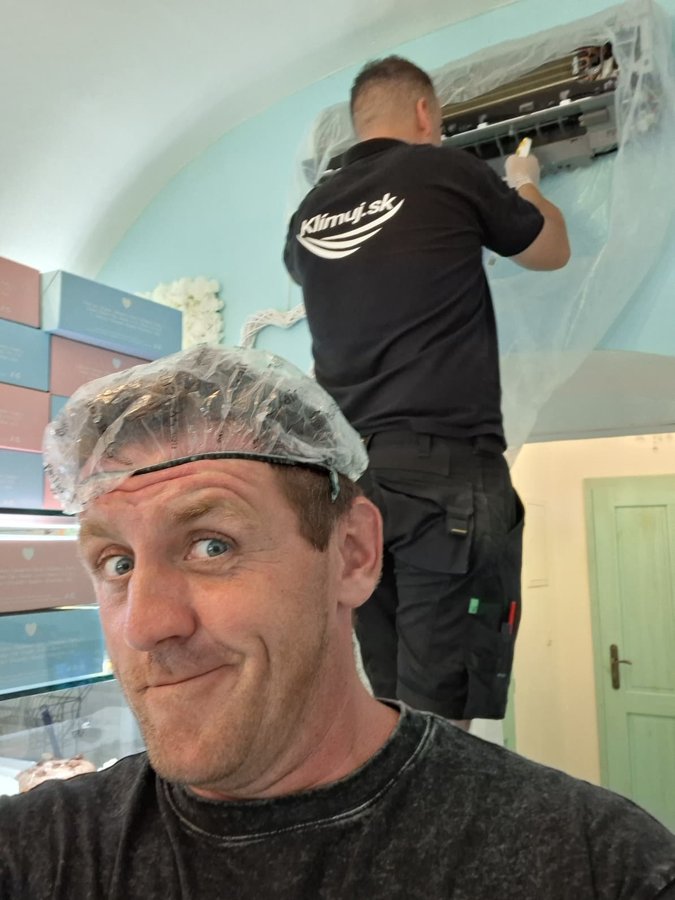
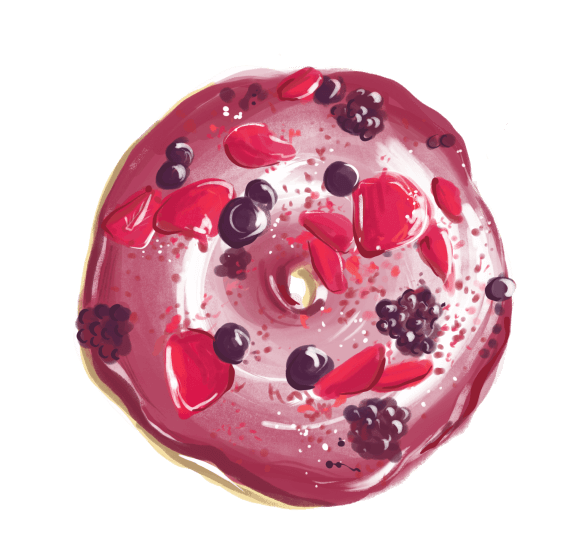
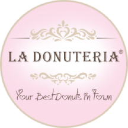

Donut Defence Protocol
Trnava. Een airco boven uitstekende gebakjes. Een warmtewisselaar die zélf bijna een gebakje was geworden. Onze eenheid kwam tussenbeide vóór iemand er poedersuiker op strooide.
Nieuw betekent niet onderhoudsvrij
Wij installeerden deze Midea Breezeless E 5 kW ongeveer twee maanden geleden.

Van kolonie naar controle
Het volledige bewijsverloop: eerst de zwaar beladen rol en het binnenwerk, daarna wat uit de unit kwam, en ten slotte het gereinigde resultaat.
De cultuur was zichtbaar ontwikkeld. Een vlag werd niet aangetroffen.
- Unit geopend en besmettingsniveau vastgesteld
- Omgeving beschermd voor gecontroleerde extractie
- Warmtewisselaar en interne delen grondig gereinigd
- Spoelwater veilig afgevoerd; missie afgesloten

Hygiëne tot in de selfie
Beschermde werkzone, handschoenen, gecontroleerde reiniging en twee veldoperatives.
// ARCHIEFBESLUIT: luchtstroom hersteld · kolonie uitgezet · donuts buiten verdenking


LOKALE HOST // RECIPROQUE RADARLa Donuteria Trnava
Een zaak die klanten verwent met luchtige donuts en uitstekende, romige softijs.
De ijsnotitie is een persoonlijke aanbeveling van het veldteam.